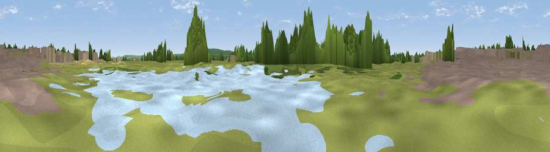

Viewpoint near Bierton
#43285 in England · top 73% of its area beats it · near BiertonWhere it is
The exact computed spot (SP 84503 14356). Click the marker for map links.
The view, rendered

A 360° render of this exact spot computed from the terrain model, tree cover and land cover — summer colours, afternoon light, calibrated against photographs of famous viewpoints. Real trees, hedges and buildings will differ in detail.
The panorama
Grey silhouette: terrain skyline in each direction (720 bearings, Earth curvature and refraction included). Dashed green: skyline with trees (+15 m) and buildings (+8 m) as obstacles. Blue strip: how far the ground is visible on each bearing.
Where the view opens
Wedge length = distance to the farthest visible ground on that bearing (vegetation-aware). Rings at 10, 25 and 50 km.
What fills the view
41% grassland · 27% woodland · 20% built-up · 11% cropland · 2% bare ground
Angular shares of the visible panorama (visual magnitude), not map area. Landscape diversity 0.59 (0–1 Shannon).
Key numbers
More beautiful places nearby
The staircase of upgrades: each row has a higher view potential than everything closer. Driving times are estimates from straight-line distance, calibrated against real road routing — check an actual route before setting out.
| Place | Direction | Drive | Score |
|---|---|---|---|
| Viewpoint near Rowsham | NNW · 4 km | ~10 min | 45.2 |
| Viewpoint near Weedon | NNW · 4 km | ~10 min | 45.9 |
| Viewpoint near Aston Abbotts | N · 5 km | ~11 min | 48.9 |
| Viewpoint near Halton | SE · 6 km | ~13 min | 74.3 |
| Coombe Hill Monument | S · 8 km | ~15 min | 75.5 |
| Viewpoint near Woolstone | WSW · 61 km | ~84 min | 76.7 |
| Viewpoint near Meon Vale | WNW · 74 km | ~97 min | 77.0 |
| Broadway Hill | WNW · 76 km | ~100 min | 77.7 |
51.82145, -0.77538 · source: osm viewpoint · position refined by local search. Computed location — check access rights before visiting.